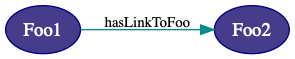
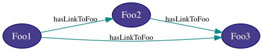

Frequently Asked Questions
Data Formats
What data formats does Knora store?
Does Knora store XML files?
XML files do not lend themselves to searching and linking. Knora’s RDF storage is better suited to its goal of facilitating data reuse.
If your XML files represent text with markup (e.g. TEI/XML), the recommended approach is to allow Knora to store it as Standoff/RDF. This will allow both text and markup to be searched using Gravsearch. Knora can also regenerate, at any time, an XML document that is equivalent to the original one.
If you have XML that simply represents structured data (rather than text documents), we recommend converting it to Knora resources, which are stored as RDF.
Triplestores
Which triplestores can be used with Knora?
Knora is tested with Ontotext GraphDB SE. Our goal is to support several triplestores, including open-source options. Integration with Apache Jena Fuseki has been partly implemented, but is not currently supported.
Knora Ontologies
Can a project use classes or properties defined in another project’s ontology?
Knora does not allow this to be done with project-specific ontologies. Each project must be free to change its own ontologies, but this is not possible if they have been used in ontologies or data created by other projects.
However, an ontology can be defined as shared, meaning that it can be used by multiple projects, and that its creators promise not to change it in ways that could affect other ontologies or data that are based on it. See Shared Ontologies for details.
There will be a standardisation process for shared ontologies (issue #523).
Why doesn’t Knora use rdfs:domain and rdfs:range for consistency checking?
Knora’s consistency checking uses Knora-specific properties, which are called knora-base:subjectClassConstraint and knora-base:objectClassConstraint in the knora-base ontology, and knora-api:subjectType and knora-api:objectType in the knora-api ontologies. These properties express restrictions on the possible subjects and objects of a property. If a property’s subject or object does not conform to the specified restrictions, Knora considers it an error.
In contrast, the RDF Schema specification says that rdfs:domain and rdfs:range can be used to “infer additional information” about the subjects and objects of properties, rather than to enforce restrictions. This is, in fact, what RDFS reasoners do in practice. For example, consider these statements:
example:hasAuthor rdfs:range example:Person .
data:book1 example:hasAuthor data:oxygen .
To an RDFS reasoner, the first statement means: if something is used as the object of example:hasAuthor, we can infer that it’s an example:Person.
The second statement is a mistake; oxygen is not a person. But an RDFS reasoner would infer that data:oxygen is actually an example:Person, since it is used as the object of example:hasAuthor. Queries looking for persons would then get data:oxygen in their results, which would be incorrect.
Therefore, rdfs:domain and rdfs:range are not suitable for consistency checking.
Knora therefore uses its own properties, along with OWL cardinalities, which it interprets according to a “closed world” assumption. Knora performs its own consistency checks to enforce these restrictions. Knora repositories can also take advantage of triplestore-specific consistency checking mechanisms.
The constraint language SHACL may someday provide a standard, triplestore-independent way to implement consistency checks, if the obstacles to its adoption can be overcome (see Diverging views of SHACL). For further discussion of these issues, see SHACL and OWL Compared.
Can a user-created property be an owl:TransitiveProperty?
No, because in Knora, a resource controls its properties. This basic assumption is what allows Knora to enforce permissions and transaction integrity. The concept of a transitive property would break this assumption.
Consider a link property hasLinkToFoo that is defined as an owl:TransitiveProperty, and is used to link resource Foo1 to resource Foo2:

Suppose that Foo1 and Foo2 are owned by different users, and that the owner of Foo2 does not have permission to change Foo1. Now suppose that the owner of Foo2 adds a link from Foo2 to Foo3, using the transitive property:

Since the property is transitive, a link from Foo1 to Foo3 is now inferred. But this should not be allowed, because the owner of Foo2 does not have permission to add a link to Foo1.
Moreover, even if the owner of Foo2 did have that permission, the inferred link would not have a knora-base:LinkValue (a reification), which every Knora link must have. The LinkValue is what stores metadata about the creator of the link, its creation date, its permissions, and so on (see LinkValue).
Finally, if an update to one resource could modify another resource, this would violate Knora’s model of transaction integrity, in which each transaction can modify only one resource (see Application-level Locking). Knora would then be unable to ensure that concurrent transactions do not interfere with each other.
Should 0.0.0.0 or localhost be used to access Knora locally
When running locally with the default configuration, if you want authorization cookies to be shared between webapi and sipi, then both webapi and sipi must be accessed over 0.0.0.0, or otherwise, the cookie will not be sent to sipi.
If no authorization cookie sharing is necessary, then both 0.0.0.0 and localhostwill work.